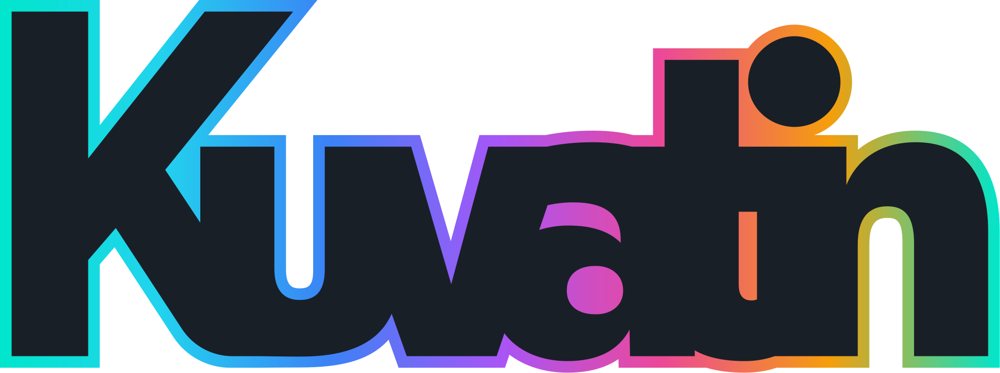

Shrink images and cut video — without the busywork.
A compact native Windows app for batch image work — compression, conversion, resizing, cropping — and now a layered video timeline with hardware-accelerated export. Right from your Explorer right-click menu.
The default. Lossy compression via libimagequant, finished with an oxipng pass — or go fully lossless. Big size drops, no visible loss.
libimagequant + oxipngMove between PNG, JPEG, WebP, BMP, TIFF and GIF.
6 formatsBy exact pixels, by percentage, or fit-to-box. Aspect-ratio aware with high-quality Lanczos3 resampling.
Lanczos3Trim to a fixed size or aspect ratio with numeric width and height fields. Crop runs before resize for predictable output.
numeric fieldsDrop a whole folder or a multi-selection. Kuvatin runs every file across all your cores and saves next to the originals — never overwriting.
rayon · multi-coreReusable presets live in the Windows Explorer menu. Select images, right-click, pick a preset — done, no window needed.
Explorer integrationThe same no-busywork idea, pointed at footage: drop clips on a layered timeline, arrange them with magnetic snapping, overlay stills, transform anything right in the preview — then export with hardware acceleration.
Drag files straight onto the timeline. Slide, edge-trim and stack clips across tracks — with magnetic snapping and an elastic, weighty feel.
Grab a clip right on the canvas — move it, resize it from a corner. Position, scale, opacity and volume also live in the inspector.
16:9, vertical, square, 4K or fully custom — and the export resolution is independent, so edit at 1080p and ship a 720p cut.
H.264 MP4 encoded on your NVIDIA GPU (NVENC), with an automatic software fallback — plus VP9 and VP8 WebM.
Quality presets from quick-and-small to max fidelity — or type the exact kbps and pixel dimensions you want.
The GStreamer engine ships inside the installer. No codec packs, no runtimes to hunt down — install and edit.
Kuvatin's default preset pairs libimagequant's quantizer with an oxipng pass for strong size cuts with no visible quality loss.
Install once and Kuvatin registers a per-user Explorer submenu. No launching, no drag-and-drop — just select files and convert. Uninstalling cleans it back up.
One self-contained .msi — images, the video editor and its bundled engine included. Adds a Start-menu shortcut, wires up the right-click menu, and upgrades any older version in place.
# clone, build, run — needs Rust (MSVC) + the GStreamer MSVC dev SDK
git clone https://github.com/Ville-Mattila/Kuvatin
cargo run -p kuvatin